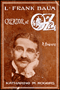
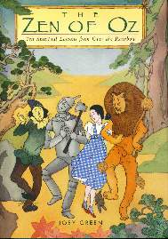
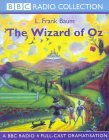

"There's no place like the home page..."
"There's no place like the home page..."[The Patchwork Girl of Oz DVD] [The Muppets' Wizard of Oz DVD] [The Visitors from Oz (2005)] [The World of Oz DVD set] [The Emerald Wand of Oz] [The Land of Oz/The Reluctant Dragon DVD] [Wicked Cast Album] [L. Frank Baum: Creator of Oz] [Do It For Oz] [The Salt Sorcerer of Oz and Other Stories] [Yellow Bricks and Ruby Slippers] [The Wonderful World of Oz (audio)] [Your Yellow Brick Road: Grab Toto and Run!] [Paradox in Oz] [The Zen of Oz] [100 Years of Oz] [Oz: The American Fairyland (video)] [The Wizard of Oz: BBC Radio version]
Long ago, L. Frank Baum and a group called The Uplifters began the Oz Film Manufacturing Company. The Company made three films set in the Land of Oz, as well as many others for children and adults. (Most of the non-Oz stock no longer exists.) The first film they made was based on The Patchwork Girl of Oz. Despite it being a silent, the film was a delight, though it strayed from the book quite a bit. This was the first feature-length Oz film. (The previous films were shorts.)
About four years ago, Thundertoad Animation began work on their first Oz film, which was also The Patchwork Girl of Oz. Now, it is complete and has been released on DVD. This is also the first fully 3D animated Oz film. The film is very close to Baum's book, though many scenes were removed, but all of these scenes are in the Deleted Scenes in the Special Features Menu and in Unused Audio.
I really wish I could say many more good things about this production, as it is a clear attempt by an Oz fan to bring an Oz story to a new medium. This is a nice enough cause, and there is real heart behind it. Sadly, there were some problems that prevented this from being a "must see it again...soon!" DVD for me.
One of the first things anyone will notice is the poor animation. Don't expect Shrek or Toy-Story animation. The characters' faces hardly make any significant movement except when they speak. Their movements are quite unnatural. The design is too sparingly decorated and the whole film looks too much like an old 3D video or computer game. To sum it up, the 3D animation looked unfinished. Two characters I really had problems with were the Tin Woodman, who seems to have become mirror-plated, and Jack Pumpkinhead, whose exterior pumpkin texture is continued inside his head, which is clearly visible.
Another thing people who've read the book will notice that it sticks very faithfully to Baum's book: all of the dialogue is taken straight from it. It pratically just offers a "book on screen" version of the book with some abridgements.
Another special feature is a trailer that begins with the same thing as the first few minutes of the movie: tell you that the MGM Wizard of Oz was based on just the first book in a series of 14 by L. Frank Baum (the trailer has Dorothy call him "Frank L. Baum") and very few films have been made from these. (That's because many of the ones based on the other books were poor quality so most have no "definitive" version.) But it is through these we see the redeeming quality of Thundertoad's effort: they want to adapt all of Baum's Oz books into films.
Well, Patchwork Girl is only their first attempt. If they do another one, let's hope it's better than this one. It's really not that bad, and if you say otherwise, go watch the Larry Semon Wizard of Oz!
(The Patchwork Girl of Oz can be ordered directly from Thundertoad Animation. See their website, http://www.thundertoadanimation.com/.)
 The Muppets' Wizard of Oz
The Muppets' Wizard of Oz
Jim Henson was wanting to make a connection with his Muppets and The Wizard of Oz for a very long time. An episode of The Muppet Show even had a brief Oz segment. But no major connection happened. However, the Henson gang did help out on some of the creatures in Disney's Return to Oz, including Brian Henson voicing Jack Pumpkinhead. Finally, in late 2004, it was announced that a TV movie would premiere in 2005: The Muppets Wizard of Oz.
Oz fans were quite excited. There hadn't been a new network TV Oz movie in years. They also remembered the Muppet's previous heartfelt adaptation of A Christmas Carol and their hilarious take on Treasure Island. Really, with how well those had stuck to their original stories (besides liberties for the Muppets to do them), hopes were high for Oz. (This reviewever was hoping for an adaptation of The Three Musketeers, though.)
Finally came the night everyone had been waiting for — except those who couldn't see the film because they had other commitments, including this reviewer! The next day, Oz fans and Muppers declared their delight…or disgust. Those who had missed it decided to wait for the extended DVD cut to be released three months later.
It was then that I finally saw it. I can't say what I thought of the TV cut because I didn't see it. It was a mixed bag for me. I couldn't decide if it was a film about the Muppets and Ashanti (who plays Dorothy) or about Oz. Really, the genius that was behind The Muppet's Christmas Carol, and the completely innocent comedy of Muppet Treasure Island was not there.
The film is an updated retelling of The Wonderful Wizard of Oz, about a girl who lives in Kansas and wants to be a singer. This, believe it or not, is Dorothy (Ashanti). She works in a diner with her Aunt Em (Queen Latifah) and Uncle Henry (David Alan Grier). She misses a chance to audition to join the Muppets, and is quite upset. Then, a tornado strikes her trailer park. She leaves the storm shelter to get Toto, her king prawn. The tornado picks up her trailer while she is inside and carries her to the updated Land of Oz. Toto (Pepe the Prawn) has suddenly become quite large and can talk. She is met by the Munchkins (led by Rizzo the Munchkin, not a rat!), and discovers her trailer has killed the Wicked Witch of the East (Miss Piggy). Tattypoo, the Good Witch of the North, (Miss Piggy) arrives and tells Dorothy that the Wizard in the Emerald City can make her a star. ("But first, you have to take my sister's shoes!" says Tattypoo, who got her name from Ruth Plumly Thompson's book The Giant Horse of Oz.) Along her way, she is joined by the Scarecrow (Kermit the Frog), the mechanical Tin Thing (Gonzo), and the cowardly comedian Lion (Fozzie Bear.) When they reach Emerald City, the Wizard tells them that he cannot grant their requests unless they bring the Wicked Witch of West's (Miss Piggy) magic eye to him.
Very much it is a modern musical of The Wizard of Oz (though there weren't many songs), and very comparable to the film version of The Wiz (which I watched shortly afterward). Sadly, they didn't think they could present the story's themes of home and family as plainly as the classic MGM movie or the original book. Although they try to have them resurface by the end by saying that home and family are more important and last longer than stardom, by this time the meaning is so confused that it's hard to notice it outright — especially as at the end, Dorothy does become a star! ("You'll always be home with us, no matter where you are," says Aunt Em.)
Many parents felt the Muppet's version of Oz had too many sexual references. I had to agree. After Dorothy puts on the Silver Shoes, she says, "if the magic power of these shoes is to make you feel confident and sexy, then mission accomplished!" Later, even more disturbingly, Toto notices two buttons on the Tin Thing's chest and plays with them, asking, "What do these do?" Gonzo replies, "Nothing, those are my nipples." Toto runs off screaming, then shouts "I feel dirty!" Not to mention Gonzo claims he was in love with a chicken. When the Wizard appears as "a lovely lady," they went more for a sexy look. She makes it look as if she is trying to entice Tin Thing. Why in the world did they have that in there?
The film, despite it's many flaws, was humorous, and cleverly written. Unfortunately, it may be what some reviewers call "the final nail in the coffin of the Muppets!" It certainly isn't it for Oz, though!
The DVD of The Muppets' Wizard of Oz is available from Amazon.com, Amazon.ca, and Amazon.co.uk using the buttons below.


It's also available on VHS videocassette (NTSC format) from Amazon.com, using this button.

 The Visitors from Oz
The Visitors from Oz
After the publication of The Marvelous Land of Oz in 1904, the publishers decided to raise interest in it, though their publicity tools are very interesting in themselves. All at once, pins or buttons with a strange insect on them, bearing the slogan "What Did The Woggle-Bug Say?" began to appear. A newspaper carried reports of a strange monster terrorizing other planets by it's presence. However, readers of The Marvelous Land of Oz and anyone who happened to read a newspaper called The Ozmapolitan (which ran for a couple issues) had a better idea of what was going on.
Sure enough, August 28th, 1904, newspapers began to run Queer Visitors From The Marvelous Land of Oz, a comic page in which the Scarecrow, Tin Woodman, the Woggle-Bug, the Sawhorse, Jack Pumpkinhead, and the Gump come to visit the United States of America. The first seventeen stories ended with the question "What did the Woggle-Bug say?" The tale had ended with someone asking the Woggle-Bug a question and the Woggle-Bug's answer was not revealed. Children tried to discover the answer using clues in the text, written by none other than L. Frank Baum, or the pictures by Walt McDougall. Baum and Paul Tietjens, who had written the music for some of the songs as well as instrumentals in the original stage version of The Wizard of Oz, wrote a song called "What Did The Woggle-Bug Say?" After the contest stories ended, the series ran for nine more stories.
This was the beginning of a "Woggle-Bug" craze. Items directly connected with the series and items not connected with series appeared featured the Woggle-Bug, including The Woggle-Bug Game of Conundrums, the first toy connected to the Land of Oz. Baum followed the series up with a picture book called The Woggle-Bug Book, in which the Woggle-Bug had more adventures in America as he tries to get a dress made with "Wagnerian Plaids." This, as well as The Marvelous Land of Oz, served as the basis of a play called The Woggle-Bug, which didn't last very long.
After that, nothing more was heard about the characters from Oz until Ozma of Oz in 1907, in which some of the visitors from Oz appear or are mentioned. (The others appeared in other books.) Queer Visitors was forgotten until Dick Martin rediscovered them in the late 1950's. Because of this, a book containing a heavy rewrtiting of some of the stories by Jean Kellogg (though it was completely attributed to Baum) called The Visitors From Oz was published in 1961. A collection of recordings of Baum stories read by Ray Bolger contained some of the Queer Visitors stories, now available on audio cassette in The Oz Audio Collection.
In 1985, a collection of slightly edited versions of the Queer Visitors stories and The Woggle-Bug Book were printed as The Third Book of Oz, and illustrated by Oz artist Eric Shanower. The "What Did The Woggle-Bug Say?" answers were edited into the stories. It went into a second printing, but quickly became unavailable. The only version of any of these still available was an expensive black and white edition of The Woggle-Bug Book from Scholar's Facsimiles and Reprints. (A digital version in color was released on CD-ROM in 2002 by Golden Age publishing.) In 2004, Dorothy & Ozma Productions launched a website, with a page of Queer Visitors stories, promotional material, the "What Did The Woggle-Bug Say?" song (with synthesized music), and a promise for more. The answers were again edited into the stories.
Shanower and David Maxine began Hungry Tiger Press and began printing an annual magazine called Oz-Story in 1995. The 1999 issue contained a black and white reprint of "The Woggle-Bug Book." However, in 2005, they reprinted The Third Book of Oz as The Visitors From Oz, (not to be confused with the Jean Kellogg/Dick Martin volume of the same name, or the Martin Gardener novel Visitors from Oz) this time with minimal editing. (Walt McDougall's name was changed to "the illustrator" in the introductory "Proclamation Extraordinary," and mention of a black man's skin color was accidentally excised.) A hardcover edition contained some of promotional material for the series. The answers to the "What did the Woggle-Bug say?" questions were not edited into the stories, but put at the end of each one in quotation marks so they could be read as part of the stories.
The new volume contains three sets of Shanower pictures: the pictures from both editions of Third Book, and some new pictures made especially for the new book. It's printed like the latter Baum Oz Books from Reilly & Britton/Lee in their original editions, and is the same height as those books, but not the same width. The text is printed in a rather large, easy-to-read type that makes it look like a children's book. A few typos are present in the text, but they are few and far between.
In this volume we discover some new facts about Oz characters, especially the Woggle-Bug. He uses four arms instead of the two he seems to have in the other Oz stories, and he has wings that serve as a parachute. Some contradictions to the other Oz books are in the volume as well, such as fairy magic working outside of Oz.
These stories contain racial stereotypes that may be offensive to many people. (But many newspapers contained such things back in 1904.) There is also some language that has had it's meaning change since it's first publication (e.g., the word "queer"). For this reason, this volume is not reccommended for children. Certainly some of the stories are still suitable, especially the Thanksgiving and Christmas stories, but parents who think their children will enjoy these may find that it would be a better choice to read them aloud with personal on-the-spot editing rather than letting them read the volume by themselves. If your children can overlook these, then let them read on their own.
All in all, a great addition to any Oz or Baum book collection.
The Visitors from Oz is available to order from Amazon.com, Amazon.ca, and Amazon.co.uk using the buttons below.


 The World of Oz
The World of Oz
This is a two DVD Collection of the oft-released The Patchwork Girl of Oz, The Magic Cloak of Oz, His Majesty, the Scarecrow of Oz, and Larry Semon's The Wizard of Oz. The first three movies were produced and directed by L. Frank Baum's own Oz Film Company in 1914, while the latter was released in 1925.
The Patchwork Girl of Oz is 66.24 minutes long in this version. It may be the same version contained in the recent Origins of Film DVD set, as it also contains the notice that the petrification scene is missing. However, a similar notice replaces the nice original title screen. Based on L. Frank Baum's seventh Oz novel, the film nicely retells the basic plot, along with a lot of other additional elements, like the lovers Jeseeva and Danx. Danx is also turned into stone in the missing Petrification scene, and afterwards is shrunk so Jeseeva, his fiancée, won't leave him behind. General Jinjur (who was not in the book) and other women fall in love with the statue. Also appearing is the seemingly pointless "Lonesome Zoop," who makes his first appearance.
The Magic Cloak of Oz, clocking in at 38.12 minutes, is sadly the version with narration by Jacqueline Lovell and the terrible score by Mark Glassman and Steffan Presley. It's based on Baum's Queen Zixi of Ix, retelling the basic plot with a bit of padding, some excisions, and brief appearances by the Zoop.
His Majesty, the Scarecrow of Oz is 58.52 minutes long. It also has the narration by Lovell and the terrible score by Glassman and Presley. The film is the basis of the book The Scarecrow of Oz, and tells the story of Princess Gloria and Pon's tragic romance. When Mombi, who has enslaved Dorothy, freezes Gloria's heart, it's up to Pon, Dorothy, the Scarecrow, Tin Woodman, Cowardly Lion, the Wizard, and Button-Bright to conquer King Krewl and Mombi.
Larry Semon's slapstick farce The Wizard of Oz is 1 hour, 35 minutes, and 19 seconds long. Once more it has the narration by Lovell and the terrible score by Glassman and Presley. It is a terrible retelling of the story, but would have made a great movie if it wasn't named The Wizard of Oz. Fraudulence is a chief theme, as the Wizard, Scarecrow, Tin Woodman, and Cowardly Lion are fakes, the last three really being farmhands in costumes. Dorothy is Queen of a country called Oz, and in danger of being usurped by Prime Minister Kruel, who is also trying to frame her friends with her disappearance during infancy.
(Note: The running times are taken straight from the DVD's, not the ones listed on the back of the case, of which all but one are incorrect.)
The DVDs are double-sided, (which means one side or the other or both are going to get scratched!) and are in no real order, except for the fact that the order they do have (Semon's Wizard, His Majesty, the Scarecrow, Patchwork Girl, and Magic Cloak) is used throughout the set. Really, couldn't they go without the weird music and narration for the last three films? And they could have had two or three films on one single-sided disc. (I would be more for putting the Oz Film Manufacturing Co. films on one disc and the Larry Semon film on another.)
Also, the menus for Patchwork Girl and Magic Cloak are much nicer than the other two, which have only six untitled chapters. The others have eight chapters with titles. There are also trivia games that have nothing to do with the films on the disc, a "dictionary" for DVD lingo, and a "Little Rascals" short that is the same on both sides! They also boast DVD-ROM content which is just a Macromedia version of the DVD menus.
As you can tell, I'm not a fan of the narration by Jacqueline Lovell and the scores by Mark Glassman and Steffan Presley, so The Patchwork Girl of Oz, the film I bought this set for, is the best of the presentations of these films. We're expecting a better presentation of the other films on the forthcoming 3-disc set of The Wizard of Oz (1939).
Buy this only if you want a cheap DVD version of Patchwork Girl, and leave the rest alone!
The World of Oz is available to order from Amazon.com, Amazon.ca, and Amazon.co.uk using the buttons below.


(Jared Davis is an avid Oz fan who lives in Springfield, Missouri. He is currently working on two Oz books, and runs Dorothy and Ozma Productions.)
 The Emerald Wand of Oz
The Emerald Wand of Oz
Since 1956, when the copyright expired on The Wonderful Wizard of Oz, writers have had some fun in the world created by L. Frank Baum. They could do so without having to seek permission or pay anything to the Baum Trust, the family group set up to maintain the royalties and administer the rights of the books. As more Oz books entered public domain, the Trust had less and less to do, and it got to the point, in recent years, where some have wondered why the trust was even still around, even among some members of the Baum family. So it was with some surprise several years ago that the Trust had commissioned and licensed a series of new Oz books, written by noted fantasy writer Sherwood Smith. The Trust was finally doing something with the Oz books, yet is it too little too late? Aren't there enough Oz books already being published now, from a number of sources? Further muddling things was the long amount of time after the announcement when nothing happened, and I'm sure many Oz fans doubted these books would actually see print.
But now, the first new Oz book by Sherwood Smith is out, and it's a good one. As one would expect from an experienced writer like Smith and a big name publisher like HarperCollins, it's quite well-written and put together. Oz is defintely the same land created by Baum, but Smith adds some new touches, and brings in some typical twenty-first century children to have adventures.
The book opens in Kansas, where we meet sisters Dori (the older, more imaginative of the two, who still plays with toys and reads Oz books) and Em (the younger, practical child who always wants everyone to do the right thing). Theire parents are divorced, and both are dealing with the pressures of growing up and helping out their mother. They are whisked up by a tornado and deposited in the Quadling Country. There, they meet a group of unicorns (Em thinks they're just ordinary horses for a very long time) and the children who tend to them in a mega-sized version of My Little Pony. After escaping with the enigmatic boy Rik, they have further adventures as they travel to Glinda's castle to enlist her help in getting home. Through the course of the book, they learn about Bastinda, the new, self-proclaimed Wicked Witch of the West, who has stolen Glinda and Ozma's smarts with her emerald wand, and has plans of her own for them. Dori, Em, and Rik eventually meet up with some of the Celebrities from the Emerald City, and together they are able to defeat Bastinda, there's a celebratory party in the Emerald City, and the girls go home. This is pretty typical of an Oz book, and I've left out a few details to give you something to look forward to, but as an attempt to re-introduce Oz to the children whohave been raised with Nickelodeon, video games, and the Harry Potter books, it works very well.
Bits of this book are derivative of what's happened before. Two kids from Kansas getting to Oz via cyclone—hasn't that been done before? There's also a Wicked Witch of the West to defeat (her name is even taken from the Russian "Magic Land" books, based on Oz), and for those familiar with The Wizard of Oz, her means of defeat is telegraphed long before she even appears. But Em and Dori's journey is different from Dorothy's as well, in that they don't end up helping three new friends to get what they've already had before. If anyone gains anything from this trip, it's the two girls, for they learn to rely on each other, and appreciate the other's way of doing things. Dori becomes a little more practical, while Em ends up with a little more imagination.
While the overall story wraps up satisfactorily, there are a few dangling threads that I'm sure Smith will be dealing with in later books (she is writing at least three more). Rik has his own agenda for being in Oz, and that will have to be dealt with at some point. Also, Dorothy has gone missing, and a few hints as to her fate are sprinkled throughout which will likely be fully developed in another book. But if those books are as Ozzy and satisfying as this one, all will come out right in the end.
There are some Oz fans out there who will probably not enjoy this book, as it doesn't quite present the same Oz as Baum created. This is inevitable, as this is not a book by Baum, and it's written over a hundred years later. Em does not start off as a sympathetic character, and some have already expressed concerns that Dori and Em may be related to Dorothy Gale. But I believe that most Oz fans will like The Emerald Wand of Oz, as the spirit of Oz is there. Em grows up through the course of the book, as does Dori. The references to Dorothy can be explained away. In other words, the alleged problems are minor, and either resolve themselves or can be ignored. For those who enjoy a good Oz story, I would highly recommend The Emerald Wand of Oz. And I'm very much looking foreward to the rest of Smith's books, to see how she resolves the plot threads set up in this book.
The Emerald Wand of Oz is available to order from Amazon.com, Amazon.ca, and Amazon.co.uk using the buttons below.


 The Land of Oz/The Reluctant Dragon
The Land of Oz/The Reluctant Dragon
I have had an interesting history with this production of The Land of Oz. First broadcast in 1960 as part of The Shirley Temple Show, it hadn't been seen for ages when I was asked to hunt it down for an Oz convention some time in the late 1980s or early 1990s. So I wrote to NBC, the network that had shown it. They wrote back giving me the address of a company in Florida. I wrote to them, but they knew nothing about it. Ultimately, while my search was unsuccessful, I did get the right people looking, and a black and white kinescope, or film copy, was eventually found back at NBC. It has been shown at Oz conventions since then. Had I been using my head back then, however, I might have had even better luck by writing to Shirley Temple Black herself, because it turns out that she had color videotapes of the series.
About ten years ago, a few black and white film episodes of The Shirley Temple Show were released on home video, but The Land of Oz was not among them. That has now changed, as the archival copies held by Black have now been released on DVD, and one of them is a double feature of The Land of Oz and The Reluctant Dragon. The Land of Oz, based on L. Frank Baum's second Oz book, looks very good. It's in full color and taken from a tape, and is thus much closer to what viewers in 1961 would have seen. There are a few "sparkles" in places, but in general the transfer looks terrific. (Now, in the next paragraph, I may be giving some spoiler information for both the book and this episode, so those of you who are not familiar with the story may want to skip ahead to the next paragraph. You have been warned.)
A few liberties with the original story had to be taken to make it fit in a fifty minute television show. The Wogglebug has been eliminated entirely, and General Jinjur has been replaced with a more typical villain, the ambitious Lord Nikidik. But boy, does Jonathan Winters have a good time with the part! He reminds me of the Nome King in some ways, in that he complains when he feels good, and so starts doing rotten things to feel like himself again. A few incidents have been eliminated, such as the trip to the jackdaws' nest, but a few have been added as well, notably Tip and Jack Pumpkinhead's encounter with a lightning bug repairman. The biggest change, however, is one that does away with the original story's greatest surprise. The story opens with Ozma on the throne of Oz, who is then lured to Mombi, turned into Tip, and had her memory wiped by Mombi. This is all part of Lord Nikidik's plot to take over Oz. From there, the story progresses much as we know it, with the Scarecrow taking over in the Emerald City for the missing Ozma. It all comes to a satisfying, if somewhat abrupt, ending, but the surprise that Tip is Ozma is spoiled by the opening scenes. But for those who already know the story -- and I suspect many of you reading this already do -- it's a small and realatively benign change.
The cast is terrific. As one would expect, Jonathan Winters chews a lot of scenery as Lord Nikidik, and he gets lots of evil cackling scenes with Arthur Treacher as his butler, Graves, and Agnes Moorehead as Mombi. And Moorehead really is quite good. She gives Mombi no redeeming qualities at all, and she loves it. (I've heard a rumor that it was this performance that convinced the producers of the Bewitched television series to cast Moorehead as Endora, Samantha's mother. I don't know if that's true or not, but I'm not so sure I believe it, as Mombi is a much different witch than Endora. However, William Asher was the producer of both The Shirley Temple Show and Bewitched.) In her dual role, Shirley Temple makes one of the best Ozma's I've ever seen, even though at this point in her career, she's a bit older than the Ozma of the books. She's slightly less successful as Tip, as she's saddled with an improbable blond wig, and her performance shows a little bit of the overearnestness that marked her more famous earlier performances. But she is quite believable. It's odd hearing the voice of Winnie the Pooh coming from a pumpkin, but that's what happens when you cast Sterling Holloway as Jack Pumpkinhead. (A few years later, Holloway would perform the voice of Pooh for the first time for Disney. An earlier television production of Winnie the Pooh, by the way, is also a part of this DVD series, and the puppets playing Pooh and his friends, in the short preview I've seen, look charming.) Ben Blue plays the Scarecrow, and Gil Lamb is the Tin Woodman, and they do terrific work as well. The legendary Mel Blanc provides the voice of the Sawhorse, making him sound like an articulate version of his Tasmanian Devil. Also of note, in a very small role, is Mari Lynn as Jellia Jamb. She has little more to do than the famous "translation" scene, but she brings a great sense of fun to it.
On the technical side, the time this was made and its small budget show, but these do not take away from its charms. There is some good, if not always successful, blue screen effects, notably the flight of the Gump. The Sawhorse's legs never move, but for some reason he's still able to run very quickly. The sets are pretty basic, but the costumes are quite good. The Scarecrow and Tin Woodman costumes are some of the most authentic I've seen, and John R. Neill's original illustrations were definitely followed in the designs of Jack Pumpkinhead and Mombi. The make-up for the Scarecrow is remarkable, in that it's extremely difficult to tell where Blue's face ends and the bag over his head begins. One can see Sterling Holloway's face peeking through Jack's pumpkin head, but it's not so bad as to detract.
There are some interesting connections between this production and Oz. Shirley Temple was rumored by many to be up for the part of Dorothy in the famous 1939 film version of The Wizard of Oz, but she is also a fan of the Oz books. I suspect she very much wanted to make The Land of Oz for that reason. The script was written by Frank Gabrielson, who also adapted The Wizard of Oz for the stage, a version that has been performed for many years all over the world. And while not directly involved in The Land of Oz, Noel Langley was the script writer for many other episodes of The Shirley Temple Show. Over twenty years earlier, Langley had been a move scriptwriter at MGM, and among the scripts he worked on there was The Wizard of Oz.
Although most readers of this review will naturally be interested in The Land of Oz, I'd like to say a few words about The Reluctant Dragon, which is also on this disk. Unlike The Land of Oz, this version is a musical, which is what one would expect when a songwriting dragon is the title character. This production boasts another stellar cast, notably John Raitt as St. George, and Jonathan Harris as the dragon's delightfully sardonic voice. While the low budgets and small studios show in this one as well, I doubt fans getting ahold of this DVD for its Oz content won't have a good time while watching this as well.
Currently, this DVD is only available as part of the Shirley Temple Storybook Collection, which can be bought either by subscription or all at once through the website http://www.buyshirleytemple.com/. As wonderful as the set looks, I know not everyone can afford the whole set, so let's hope that individual titles will be available in the near future.
 Wicked
Wicked
Wicked, Gregory Maguire's novel that fills in the gaps of the life of the Wicked Witch of the West, was not universally accepted by Oz book fans when it first came out. It was too grown-up, historically inaccurate, based on The Movie instead of the book, and just not Ozzy for some. But those who know Oz only from The Movie, and some open-minded fans of the book (including this reviewer), embraced it and seemed to enjoy it on its own terms. But turning it into a Broadway musical? That was probably not something most folks thought possible. That didn't stop the producers of what has become one of the biggest new hits on the New York theater scene. Wicked is now one of the hottest tickets on Broadway, a roadshow production is scheduled to tour the country in 2005, and it wouldn't surprise me if a West End production starts in London by the end of this year.
Reviews for the show in both its San Francisco previews last summer and current New York runs were mixed, but many of the critics agreed that the show had a strong story and script with a weak score -- just the opposite of what has often passed for theater in the last decade or two (are you listening, Andrew Lloyd Webber?). Not having seen the show yet myself, I couldn't say if that is an accurate assessment. But having listened to the cast album a few times now, I can tell you that on its own, it stands up well. The sound is definitely more modern than, say, Arlen and Harburg's songs for The Movie, yet there's also a timeless quality to the songs that should allow them to hold up for some time. Composer Stephen Schwartz, who worked on the scores for Pippin, Godspell, and the Disney movies Pocahontas and The Hunchback of Notre Dame, certainly should know how to write a show tune, and while some of his rhymes are a little awkward, the results are pleasant and a lot of fun to listen to.
The performances on this CD are by the original Broadway cast, and they all do a terrific job. Kristen Chenoweth as Glinda certainly demonstrates why she won a Tony Award last year (as Sally in You're a Good Man, Charlie Brown). She has a voice that sounds a bit flighty -- perfect for a part based on Billie Burke's portrayal (as opposed to the regal, omniscient Glinda of the books) -- yet it's also very powerful when needed. She also has terrific comic timing, especially in "Popular," one of the best songs on the album. Idina Menzel as Elphaba, the title character, has a different quality to her voice, more subdued and introspective, that again fits the character. Menzel really shines in "Defying Gravity," the Act I finale that I gather is the show-stopper of the Broadway run. These two actresses carry the bulk of the album, and they are terrific in both their solos and their duets. "What Is This Feeling?" is an especially good vehicle to showcase their characters and voices. Two other cast members of note on this album are Norbert Leo Butz as Fiyero, who brings both gravity and joy to "Dancing Through Life," and Broadway veteran Joel Grey, who reveals an intriguing side to the Wizard in "Wonderful." This song could just as easily have been sung to Dorothy and her friends in the original story when they discovered that he was a humbug.
So, is this a perfect album? Not quite. There are several instances where the orchestration overwhelms the singers. This is something I've heard in many shows, amateur and professional, but it really surprised me here. Fortunately, there aren't too many moments like this. The booklet that all CDs seem to come with these days has a lot of nice information, including all the lyrics (and what character is singing them!) and some photos, but I would also have liked to see a synopsis of the show and a few more photos.
Will Oz fans enjoy this album? Well, this one certainly does. If you enjoyed Wicked, either as a novel or on stage (or on screen in the future?), I highly recommend the cast album. And if you enjoy modern stage musicals, you'll probably get a kick out of it. Fans who like their Oz more innocent, however, may want to give this one a pass.


Read the album's press release here.

L. Frank Baum: Creator of Oz (A Biography)For many years, not much was known about L. Frank Baum. That changed in 1961 when Baum's publishers, Reilly and Lee, published the first biography of Baum, To Please a Child, written by Baum's eldest son, Frank Joslyn Baum, and Russell P. MacFall. Since then, Ozmologists have done much research on Baum's life -- and it turns out that much of To Please a Child is not terribly accurate. That book relied too much on the recollections of Frank J. Baum, but he proved to not have a photographic memory. Still, the only other biographies to have been published since then have been written for very young readers -- until now. Katharine M. Rogers has taken on the task of writing the second Baum biography for older readers and scholars, and this time the results are more satisfying.
I should point out, however, that there will be very little in this book that's new for many Oz fans. Long-time readers of The Baum Bugle, the journal of The International Wizard of Oz Club, will recognize many recollections from other Baum family members and Oz researchers. This biography also benefits from the many books written about aspects of Baum's life in recent years, such as Susan Ferrara's The Family of the Wizard: The Baums of Syracuse and Nancy Tystad Koupal's Baum's Road to Oz: The Dakota Years. Nevertheless, Rogers' book is important in that it collects this information in one volume, and more casual Oz fans, or just the curious, will find much that is new for them. Unlike some Baum enthusiasts, Rogers does not dwell on Baum's childhood and early adulthood. She manages to succinctly but thoroughly tell the reader about Baum's early life in just one chapter so that she can get to what makes Baum an important figure in history: his writing. Rogers not only looks at Baum's writing career from a biographical point of view, she also takes the time to analyze what he wrote and offer her comments -- and not just on Baum's Oz books. While some Oz fans will probably disagree with some of her assessments, it's refreshing to read her perspective as an "outsider." Rogers seems to be a genuine fan of Oz and Baum, but she's not afraid to say when something doesn't work for her. Overall, however, this is a well-researched and thorough biography. One can really get the sense of who Baum was and what really made him tick.
I do have one big complaint about this book: the notes. As in so many other more weighty, academic books, the notes are put in a separate section at the back of the book. If all of the notes were just references to sources, I suppose I could live with it as something I could ignore if I chose to. But Rogers puts some interesting information in some of the notes as well that doesn't quite fit into the text. I prefer my notes as footnotes or, if they must be endnotes, at the end of a chapter. Still, as I was reading the book, I kept a second bookmark in the notes section, and that worked well enough. My only other complaint, if you can call it that, is the lack of pictures. There are a few illustrations from the Oz books scattered throughout the text, and a handful of Baum family photographs in a group in the middle, but it seemed to be too little. Still, this is the type of book people go to for information, not pretty pictures.
This is an important book, and one that I'd recommend Oz and Baum fans get. It may be another forty years before an even more definitive biography of Baum is ever published, so this will likely be the major information source about him for some time to come. Fortunately, it is a very good one.
L. Frank Baum: Creator of Oz is available from Amazon.com, Amazon.ca (in Canada), and Amazon.co.uk (in the United Kingdom) by clicking on the appropriate buttons below.
Harcover edition.


Paperback edition.


 Do It For Oz
Do It For Oz
Chris Dulabone has been one of the most prolific writers and publishers of new Oz books for the last decade and longer. First published under Buckethead Enterprises of Oz, his works are now coming from Tails of the Cowardly Lion and Friends. One of his latest books is Do It For Oz, and this is an Oz book that has something for many Oz fans.
Those fans will surely be familiar with Johnny Dooit. Last seen in L. Frank Baum's The Road to Oz, Johnny's been going around the world, building contraptions of all sorts and helping people wherever and however he can. Yes, he's just that nice of a guy. Then there's Duit (do you see possible complications coming up already?), a rather sweet young orphan girl in the country of Malaria who, through an unusual series of events, is given the power to transform herself into a cat. She uses her new ability to escape the orphanage and its cruel overseer, Madam Innador. Of course, there's another bad guy in the story as well, and it's the Red Rogue of Dawna, last seen in Baum's non-Oz story The Enchanted Island of Yew. He manages to come to America, reads The Road to Oz, finds out about Johnny Dooit, and blames him for all of his problems! (Dulabone paints the Red Rogue not so much as evil as extremely confused and suggestible.) So the Red Rogue sets out to find Johnny Dooit -- and crosses paths with Madam Innador, who is looking for Duit. This duet has a number of adventures, as do Duit and Dooit -- and the latter two get together as well.
As in many of the best Oz stories, word play abounds in this book. The chapter titles alone all rhyme with the names of the two protagonists, to give one example. In the past, Chris Dulabone has had the unfortunate tendancy to not bring his books to a satisfactory conclusion, in the hopes of continuing the adventure later in another book, but this time he manages to tie all of his plot threads together very neatly while still leaving the door open for more adventures later. The pacing does seem a little off to me, as the story lingers a little too long on the Red Rogue and Innador's adventures in Merryland and with the Sea Fairies (hey, I told you there was a lot for Oz fans in this book), then later rushes the resolutions in only a chapter or two, but overall this is a satisfying story, Ozzy yet original.
Special mention must be made of the wonderful line drawings by Luciano Vecchio. His drawings are simple and charming, and very evocative. Here's hoping that he will be able to return to Oz at some point in the future.
So should you get Do It For Oz? Yes! Do it!
Do It For Oz is available from Tails of the Cowardly Lion and Friends.

 The Salt Sorcer of Oz and Other Stories
The Salt Sorcer of Oz and Other Stories
From the moment I saw the dustjacket of this book I knew that wondrous surprises were in store. The wraparound colorful illustration and typeface reminded me of, of all things, my beloved Raggedy Ann books!
A happy suggestion -- read this book gradually, one story at a time. For Eric Shanower never writes the same story twice, and each of these six gems of prose deserves to stand alone. You may find that after the journey to the top of Cork Mountain with the Salt Sorcerer and Kabumpo, you will do well to rest, get a meal, and return to the real world for a few hours before undertaking the next journey, to the depths of the earth where the Mushroom Queen dwells in her own strange splendour. And I suggest a full night's sleep before trekking into the forest of Gugu.
I never thought much of Gugu and his subjects before; they seemed wooden in The Magic of Oz. I will never think of them in that way again, having been with them on an adventure worthy of being called Kiplingesque in the centerpiece story of this book, "Gugu and the Kalidahs". I even felt a pang of wistful loss for the defeated Kalidah at the end.
Then on, across the Deadly Desert, to some outlying magical land with the resourceful Amanda, trying hard to learn responsibility, in "The Silver Jug."
I laughed out loud, then almost teared up, at "The Final Fate of The Frog Man" (I always wondered what happened to him); and the Patchwork Girl is typically devoid of dignity and totally ridiculous in "The Balloon-Girl of Oz."
Following each story are a few lines of verse from an Ozzy friend;this feature also reminds me of Kipling's writing.
And the illustrations! Each story is illustrated in its own distinct style; you can almost feel the damp murkiness of the Mushroom Queen's domain, and the sun dappled dusk of Gugu's forest. And after the stories are finished DON'T STOP! Keep turning the pages right to the very end, where one last surprise awaits you just before the end paper, which is itself a glorious mélange of Oz characters.
I would not recommend all of these stories for the very youngest children, for some fairly intense subjects are dealt with; but for those who are ready this book is a treasure, indeed.
Click on one of the buttons below to order this book.


(Karyl Carlson is retired, and enjoys writing and appearing in community theater. She is the co-author of the novel Queen Ann in Oz and the creator of many fabulous Oz dolls.)
 Yellow Bricks & Ruby Slippers
Yellow Bricks & Ruby Slippers
Yellow Bricks & Ruby Slippers is an intriguing little book, in that there are sixty-seven pieces in it from sixty-seven contributors. So why is the book only sixty-six pages long? Because each piece was limited to only ninety-nine words in length. Needless to say, therefore, they are quite short -- and, as it turns out, very different. There really is no pattern to these pieces except for the word count. Some appear to be true stories -- I was especially touched by Ted Baum's recollection of his sister Dorothy -- some are very Ozzy little stories, some are a bit further from the Ozzy path, and some are poems of many styles. This just goes to show the true universality of Oz, as it was used in many ways to make many points. Oz can inspire playful tales or serious introspection. A few pieces even deal with last September's un-Ozzy events in New York City and Washington, a timely reminder that Oz can be a metaphor for many things.
I recognize none of the names of the contributors, so it doesn't appear that editor John Daniel sought submissions from the Oz fan community. The press release that I received, in fact, states that Daniel recruited his writing students, friends and colleagues, and anyone answering his call for submissions on his website. So it's probably no surprise that most of these works are inspired by The Movie, not the book. Dorothy's shoes are usually ruby, although silver slippers do get mentioned here and there.
The book is quite short and easy to read, and just about everyone will find something to their liking -- and more likely than not something not to their liking as well. That's the risk one takes with an anthology of this sort. (Sensitive readers and parents of young children should know that there are a very few uses of "adult" language and ideas, so they may want to avoid this book for that reason.) I recommend this book for those who don't mind their Oz seen through several different lenses, as Yellow Bricks & Ruby Slippers presents Oz in just that way. My biggest complaint is that I would have liked to know more about the contributors, as they say some interesting things. But then again, even brief biographies would have stretched the length out, which goes against the whole reason for this book's existence.
Click on the buttons below to order from Amazon.com, Amazon.ca, or Amazon.co.uk. You can also order directly from the publishers, John Daniel and Company.


 The Wonderful World of Oz
The Wonderful World of Oz
The Wonderful World of Oz Audio Theatre Production by Colonial Radio Theatre is a marvelous collection of ten cassettes featuring the first five stories in the Oz series: The Wizard of Oz, The Marvelous Land of Oz, Ozma of Oz, Dorothy and the Wizard in Oz, and The Road to Oz. The box set will be great for anyone who has difficulty with reading or would like to have the experience of traveling with Dorothy as she journeys to Oz. The Colonial Radio Players do a good job in bringing to life the Oz characters. Amy Strack has a youthful, yet intelligent voice which is great for Dorothy. Leigh Ann Price does an equally fine job with Princess Ozma, with her regal and playful voice. With sound effects, characters come to life as they had never have before, most notably Tik-Tok and the Musicker. The sound effects of Nick Chopper walking is entirely convincing.
Listening to the stories reveals fresh insights into some of the characters. In Ozma of Oz, the Nome King is portrayed more as a trickster than an evil villain. In The Road to Oz, Button Bright is not an annoying little boy, but an inquisitive youth who asks about things by repeating the familiar phase, "Don't know."
It is fascinating to listen to "L. Frank Baum" as he reads the introduction to each of the stories. One can hear his frustration in not being able to write other stories, when his "loving tyrants" cry out, "Oz! Oz! More about Oz!" Baum can't even write an Oz story without Dorothy because, "It isn't a real Oz story without her."
The package is presentable with illustrations by W. W. Denslow, but seems inappropriate for all five books. Where are Ozma, the Nome King, Tik-Tok, or even Glinda and the Wizard? A nice addition to the package might be a color copy of the end papers of The Road to Oz by John R. Neill, which has most of characters in these stories. This would help the portrayals of some the characters. What do Gargoyles look like? What do Scoodlers look like? The end papers would have helped with people's imaginations.
The adaptions of the books are pretty faithful to the original text. There are a few bits that are curious. For example, in The Road to Oz, Nick Chopper first reveals that there is no money in Oz, and then later he tells Dorothy how the Scarecrow was stuffed with money in their adventures in The Marvelous Land of Oz. This is a curious part of the adaption of The Road to Oz, for it doesn't happen in the book. Perhaps it was meant to bring all of the stories to a conclusion.
The Wonderful World of Oz Audio Theatre Production ends rather abruptly with the annoucement that "L. Frank Baum" has news of another story that may be the last Oz story (The Emerald City of Oz). This almost demands The Wonderful World of Oz volume 2 of the next five stories. Perhaps the annoucement was meant as a gentle reminder that the listener can read the next book to find out what happens next? [Editor's note: Colonial Radio Theatre has already announced plans to produce the rest of the Baum Oz books in this series.]
Regardless, The Wonderful World of Oz Audio Theatre Production will make a nice addition to any Oz collector's collection.
Click on the buttons below to order your own copy of The Wonderful World of Oz from Amazon.com, Amazon.ca, or Amazon.co.uk. You can also find more about Colonial Radio Theatre, and even listen to excerpts, at http://www.colonialradio.com/.


(David Baker is an artist living in the Pacific Northwest. He has won several awards for his Oz works.)
 Your Yellow Brick Road: Grab Toto and Run!
Your Yellow Brick Road: Grab Toto and Run!
It was bound to happen at some point or another. The proliferation of self-help and how-to books in recent years has spawned a curious beast, the Oz-themed how-to book. Quite a few have come out recently, discussing everything from business practices to spirituality. It's no wonder, as The Wizard of Oz is a story most people are familiar with, and it's so rich with symbols and themes that it can be interpreted and used as examples in many, many ways. But until receiving a copy of Lyman Jackson's Your Yellow Brick Road: Grab Toto and Run! to review, I've been avoiding them -- partly out of lack of time (there are just so many other Oz books to read!) and partly because I didn't think they'd be terribly Ozzy, saying more about whatever the book was really about.
In this case, Your Yellow Brick Raod is definitely not a book I'd recommend to Oz fans. There just isn't that much about Oz in it. True, there are two chapters that deal explicity with The Wizard of Oz and how the story and events tie in with the subject matter, as well as numerous other examples sprinkled throughout the rest of the book. But it's too little to truly make this an Ozzy book. Not only that, but much to my surprise no actual quotes or passages from The Wizard of Oz are used. Since The Wizard of Oz (the book) is in public domain, there would have been no problems with doing so, and it may have made the examples clearer. The good news, however, is that this book actually gets its Oz content from the original book, not the famous MGM movie, which is becoming a rarity, as the movie is so much more well known.
If you've read this far, you may be wondering what this book is about. I'll be honest, after having read the book, I'm wondering that myself! The book is subtitled How Many Times Have You Known Exactly What to Say An Hour After You Should Have? In my case, the answer is "many," and I'm sure other readers will agree with me. Yet this book seems to be involved with so much more, often presenting a spiritual interpretation of The Wizard of Oz. I can't speak for everyone, but that's not exactly the kind of idea that the subtitle suggests to me -- my first thought was that it would help the reader know what to tell the boss during that unfavorable job review. While Jackson includes a preface that explains what he's trying to do, I was none the wiser, even after rereading it after reading the whole book. I think a few examples of the types of situations the author has in mind, peppered throughout the book, would have gone a long way towards making this book more accessible and understandable.
To be fair, I think I may have been hampered in my reading of this book in that I was just trying to see what it was about. The actual help is presented as a series of six exercises to expand one's thinking and consciousness. I suspect that if I had actually done the exercises, practicing each one over several weeks as I went and incorporating them into my life, I might better grasp what the book was about.
In conclusion, I think that there are definitely some people who will want to read this book and learn from it -- and there are others that probably should. But as an addition to your Wizard of Oz collection, I can't recommend it except to the most diehard completists, who will get anything even remotely linked to Oz.
You can find out more about, and even order, Your Yellow Brick Road: Grab Toto and Run! at the website http://www.destudies.com/.
 Paradox in Oz
Paradox in Oz
For all the apocryphal Oz fiction that is readily available nowadays, rare is the book that lives up to the expectations set by the original Oz books. Even the best of these books often require the reader to do a little forgiving -- if not of the writing, then of the illustrations or the printing quality -- for the love of Oz. Then there is the occasional book, such as Gregory Maguire's Wicked, which meets the highest of publishing standards, but is worlds away from the original Oz books in tone, spirit, and intent. In short, they just don't have the feel of "real" Oz books.
Paradox in Oz feels like a real Oz book. Lovingly crafted, from the fine green cloth binding down to the familiar typeface (which matches that of the original Oz books), the volume looks every bit at home on a shelf of old Reilly & Britton or Reilly & Lee Oz books. Eric Shanower's crisp illustrations, as usual, show a great deal of love and respect for the work of prior royal illustrators -- and they're clever, too! And last but not least, Einhorn's story rings true to Oz, is fast-paced and fun to read, and at the same time makes a nice introduction to logic riddles and puzzles.
It all starts -- or ends, depending on your perspective -- when Omby Amby (a.k.a. the soldier with the green whiskers) discovers a single white hair in his magnificent green beard. Oz has started aging again, and nobody knows why. The key seems to lie with The Man Who Lives Backwards, but as he turns out to be no more than a baby, Ozma must go back in time and locate him when he was still old enough to talk. Ozma deserves some more adventures of her own, and this is a proper one: the future of Oz lies at stake, there are evil tyrants to overcome, and Ozma must face up to her past -- literally.
Everything works out well in the end, as Ozma -- literally -- reassures herself it will. But it would all be quite impozzible to do without the assistance of Tempus, the parrot-ox. Parrot-oxes thrive on impossibilities: in fact, anything impossible is possible if you have a parrot-ox, and there's one right there. Confused? Whenever the thread of logic gets hopelessly tangled, Tempus is sure to appear, bringing a swift solution and saving the reader from developing a severe headache.
Einhorn narrowly avoids bogging down the plot: the puzzles can get quite confusing, perhaps especially for children, but a good douse of humor invariably picks the action up and keeps things running along. I would have liked to have seen a postscript in the book, pointing out that many of the paradoxes that appear here are quite famous (Zeno's paradoxes, Newcomb's paradox), and much has been written about them. A postscript could also refer kids who enjoyed this book to the riddle books of Raymond Smullyan and Martin Gardner; and there ought to have been at least a note of reference to M. C. Escher, whose influence is so apparent in the illustrations (and rightly so!).
Paradox in Oz contains a few references to characters and events in the first five of Baum's Oz books, but the first two alone should give you enough Oz background to enjoy this book. To the Oz buff, I recommend turning straight to the illustration on pages 222-223: test yourself on how many of the alternate Ozzes you are able to recognize! Eric Shanower, who always does a great job, has outdone himself with the illustrations for this book. The Escherlike endpapers are brilliant. Look out, also, for Dr. Majestico's mishap; the frowning man who is smiling upside-down; a very welcoming gate; a pair of impossible tritons; and a teed tee.
Click on the buttons below to order your own copy of Paradox in Oz from Amazon.com, or directly from the publishers, Hungry Tiger Press.


(Gili Bar-Hillel has written stories for Oziana. She is the editor of children's books at Keter Publishing House in Israel, and the Hebrew translator of the Harry Potter books.)

The Zen of OzFor at least fifty years, a popular game among those familiar with the story of The Wizard of Oz has been "What is the meaning of Oz?" Numerous articles and essays have been written that use Oz to demonstrate the ideals of feminism, socialism, Freudianism, and numerous political beliefs, among others. Now, Joey Green takes a look at the story from a Zen perspective, and it makes for some enlightening reading.
Although Green says he has read L. Frank Baum's Oz books to his daughter, he chooses to use the famous 1939 MGM film version as the basis for his analysis. This is not necessarily a bad idea, however, as it is probably the version of the story his readers would be the most familiar with, and the general ideas can easily be applied to the book as well. The format of the book is pretty straightforward: Ten short chapters, each examining a particular character or event from the movie and showing how it demonstrates a particular aspect of Zen: Dorothy's life in Kansas shows how her karma leads her to Oz, the ruby slippers are her inner spark, "Follow the yellow brick road" is a mantra, and so forth. The chapters are short and to the point, yet cover the subject very nicely. And it turns out Oz is a perfect vehicle for introducing the ideas of Zen, as they mesh together very well. Green doesn't really bring out the Zen in the story, he just polishes it up a bit to show that it was there all along. No, I'm not saying that L. Frank Baum and the folks at MGM wrote the story as a Zen parable; rather, this book shows just how universal Zen is by showing how it appears in a universal story.
Special mention must be made here of Cathy Pavia's illustrations. She has done an excellent job of rendering the famous Oz characters in a style that strongly resembles Japanese wood cut engravings. They are both Ozzy and Japanese, and perfect for this book. Her take on Dorothy meeting Glinda and the Munchkins is especially charming, and her Wizard's head has a very strong kabuki look. The biggest problem is that there are not enough of them! Only half of the book's chapters open with one of Pavia's pictures, which is a shame.
The Zen of Oz is a good book, but it probably would not be to everyone's tastes. Those looking for an introduction to the ideas of Zen should certainly take a look, and Oz fans might want to take a look as well if they are open to various interpretations.
Click on the buttons below to order your own copy of The Zen of Oz from Amazon.com, Amazon.ca, or Amazon.co.uk.


 100 Years of Oz
100 Years of Oz
I must admit, I am extremely jealous of author John Fricke and his cohorts for putting this book together. It's the sort of book about Oz I've always wanted to see, an examination of the whole Oz phenomenon over its first century, something of an updated version of the classic 1977 book The Oz Scrapbook. But other than talking about my general idea to a few fellow fans, my idea never went anywhere.
And yet, it's not every year that such a popular series of books and general pop culture phenomenon celebrates its centennial. So a book of this sort was probably inevitable. (And should somebody argue that this book is a year too early, as The Wonderful Wizard of Oz was published in 1900, and not 1899, I will point out that the story was actually written in 1898, and very nearly was published in 1899. In fact, the first edition of The Wonderful Wizard of Oz incorrectly gave its year of copyright as 1899. Besides, it's close enough to 2000 now as I write this, what's a few months?) John Fricke is an excellent choice as the writer, for he has shown in many articles in The Baum Bugle, and The Wizard of Oz: The Official 50th Anniversary Pictorial, the definitive book on the most famous Oz movie of them all, that he knows Oz, and can present it in an informative yet light manner.
The text, however, is kept to a minimum in this book. After a thorough introduction by Fricke, the book is divided into decades, and each one presents a quick overview of the Ozzy events and developments of those ten years. Then the text steps aside for the pictures. And this is where the true strength of this book lies. It is a riot of colors, showing Oz items of all sorts, from the earliest books by Baum to items from the 1996 video series The Oz Kids. This is an extremely attractive book, well designed and eye-catching.
Those who are fans of the Oz books may be disappointed, as the books are generally mentioned only in passing as each is published (or in a few cases, republished) through the decades. Yet while some may consider this to be a weakness, it allows the makers of the book to show that Oz is much, much more than a set of children's stories. There are some fascinating representations of such Oz productions as the 1902 stage play, the movies of the Oz Film Company, the 1925 film version of The Wizard of Oz, the famous MGM movie, several marionette shows, The Wiz, the 1985 Disney version of Return to Oz, and other shows. There are also numerous advertisements, tie-in products ranging from dolls to View-Master reels, and other bits of curiosa.
Although many consider Oz to be a uniquely American phenomenon, this book makes it clear that Dorothy and her friends are now known all around the world, with representations of many translations of The Wizard of Oz and other books, advertisements for Oz films of all sorts in various languages, and even posters and programs from original productions of The Wizard of Oz in Germany, Japan, Israel, and other countries. One other nice touch is excerpts from various Oz texts sprinkled throughout the book -- including one from the first French translation, which shows a young girl named Lily living in Arkansas!
This is not an exhaustive, thorough examination of all things Oz. That book -- if anyone is ever willing to write it, or if the buying public is willing to accept it -- has yet to be written. Yet 100 Years of Oz is an excellent overview of the entire Oz phenomenon, in all its forms. For many, this smorgasbord will be enough, and for the rest, it will whet the appetite for more.
Click on the buttons below to order your own copy of 100 Years of Oz from Amazon.com, Amazon.ca, or Amazon.co.uk.


 Oz: The American Fairyland
Oz: The American Fairyland
As part of their "Master Artist" series of made-for-video documentaries, Sirocco has put out this video all about L. Frank Baum and the whole Oz phenomenon. And it is quite good, too. Leonard A. Swann, Jr., the producer, has certainly done his homework, as there is much information about Baum and his successors, Oz, and Oz fans to satisfy Ozmatologists everywhere. Because this is a video, there is more emphasis on Oz as inspiration for artists. Wizard of Oz illustrators Evelyn Copleman and Charles Santore are interviewed, for example, as are doll artists Helen Kish, Robin Woods, and Robert Tonner. And much of the second half of the video is taken up with showing Oz dolls from several eras and other Oz trinkets. Plus, there are a number of clips from Oz movies, and not that famous one that's on television every year. Most notable are scenes from the 1969 film The Wonderful Land of Oz, which has never been released on video, and the recent Russian adaptation of The Wizard of Oz (the girl playing Elli has got to be one of the cutest kids I have ever seen). This is a nice twist on the story of Oz, emphasizing its visual aspects, and works very well in this documentary.
But happily, the fact that Oz is a story is never lost. Hidden Valley of Oz author Rachel Cosgrove Payes and Oz experts Michael Patrick Hearn, Jay Scarfone, and Bill Stillman are also there to tell us about Oz itself, the characters, and the stories behind them. There are also plenty of photographs, drawings, book covers, and old film clips to help the video move along and make it not seem like a festival of talking heads. The pace is crisp without being kinetic, perfect for a documentary about Oz.
I recommend this video for all Oz fans. Even if you think you know the whole story of Oz, there is much here that is worth having, and you just may be surprised. The large price tag, however, may make this tape hard to acquire for those without deep pockets.
You can order this video directly through  Sirocco Video. Also currently available from Sirocco is Charles Santore Illustrates The Wizard of Oz (©1997, ISBN 1-881890-15-5, 30 minutes), another video documentary, about how Santore illustrated his 1991 edition of The Wizard of Oz.
Sirocco Video. Also currently available from Sirocco is Charles Santore Illustrates The Wizard of Oz (©1997, ISBN 1-881890-15-5, 30 minutes), another video documentary, about how Santore illustrated his 1991 edition of The Wizard of Oz.  You can order this VHS videocassette directly from Sirocco Video.
You can order this VHS videocassette directly from Sirocco Video.

The Wizard of OzI'd heard some time ago that the BBC had produced a radio adaptation of The Wizard of Oz, but I never thought I'd get a chance to hear it, since I lived in America. This is too bad, I thought to myself, since the BBC has an excellent reputation for radio adaptations, and I would like to hear it. Well, through a happy set of circumstances, I was able to acquire the cassette release, which was just released a few years ago.
And I was not disappointed. This is not a straightforward reading with a few sound effects thrown in, as so many recent audio renditions of the story have been, but a true adaptation of the story for radio, with a full cast of actors. And as befits a classic American story, most of the actors sport surprisingly authentic American accents. (The one exception is Patrick Barlow's Tin Woodman, who has a middle class English accent, but with his characterization it works very well, sounding very solid and heartfelt.) Barbara Barnes is a nicely enthusiastic Dorothy, and Philip Franks' Scarecrow was hilarious, using big words that the brainless Scarecrow shouldn't know how to use. Bradley Lavelle as the Cowardly Lion sported some vaguely New York-esque accent, but he definitely made the part his own, not a copy of Bert Lahr from the famous movie. And the other characters all come off very well, also.
Happily, the story told here is Baum's, not MGM's. This adaptation, for the most part, follows the book, with such characters as the Kalidahs, Mrs. Stork, and the Field Mice (and yes, their Queen) all appearing. Anyone who knows Baum's original book well will recognize such incidents, often overlooked in other versions, as the Tin Woodman stepping on a beetle, or the visit with the farmer the night before they reach the Emerald City. True, there is some telescoping of events (the journey south to Glinda is left out entirely -- which unfortunately means no Hammerheads), and a few consessions were made to the movie, such as introducing the Wicked Witch of the West much earlier, but these are minor, and do not seriously detract from the overall success of this adaptation.
I highly recommend the BBC's radio adaptation of The Wizard of Oz to all Oz fans, but especially those who want a version they can listen to (it plays great on a car cassette system), and those who enjoy well written and performed radio. It also makes a great introduction to Oz to children.
Click on the button below to order a copy of the BBC's radio adaptation of The Wizard of Oz for yourself. (Note: This will be charged in pounds sterling, and sent from Great Britain.)

"There's no place like the home page..."